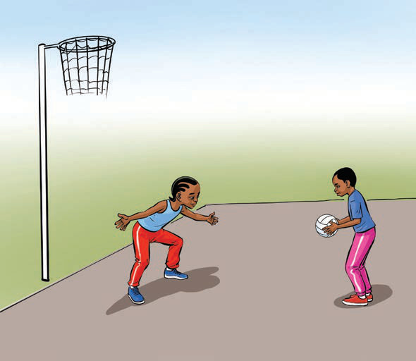

A girl defends in netball with her arms wide while another girl holds the ball near the goal post.
Figure 16: Defending in netball
Activity 14
(a)
Practise defending someone by preventing them from receiving or passing.
(b)
Work with your teammates to practice blocking the area by blocking the opponents’ path.
Exercise 6
Why is shooting an important skill in netball?
Explain the importance of footwork in netball.